| variable | observations | missing_count | mean | median | standard_deviation | minimum | maximum | skewness | kurtosis | distribution_shape |
|---|---|---|---|---|---|---|---|---|---|---|
| longitude | 14448 | 0 | -119.573294 | -118.510 | 2.003203 | -124.3000 | -114.3100 | -0.293953 | -1.336546 | Approximately symmetric |
| latitude | 14448 | 0 | 35.633523 | 34.260 | 2.132504 | 32.5500 | 41.9200 | 0.459918 | -1.124066 | Approximately symmetric |
| housing_median_age | 14448 | 0 | 28.742594 | 29.000 | 12.574925 | 1.0000 | 52.0000 | 0.059341 | -0.796853 | Approximately symmetric |
| total_rooms | 14448 | 0 | 2613.580565 | 2111.000 | 2125.841046 | 6.0000 | 37937.0000 | 3.892093 | 29.038327 | Right-skewed |
| total_bedrooms | 14308 | 140 | 533.261672 | 430.000 | 412.858965 | 2.0000 | 5471.0000 | 3.247117 | 18.736443 | Right-skewed |
| population | 14448 | 0 | 1413.560839 | 1159.000 | 1114.876264 | 3.0000 | 35682.0000 | 4.936967 | 78.854377 | Right-skewed |
| households | 14448 | 0 | 495.297204 | 406.000 | 376.039520 | 2.0000 | 5189.0000 | 3.231115 | 19.035486 | Right-skewed |
| median_income | 14448 | 0 | 3.873148 | 3.536 | 1.893996 | 0.4999 | 15.0001 | 1.606024 | 4.605603 | Right-skewed |
| median_house_value | 14448 | 0 | 207143.478890 | 179900.000 | 115558.181448 | 14999.0000 | 500001.0000 | 0.985712 | 0.335741 | Right-skewed |
| feature | correlation_with_target | absolute_correlation |
|---|---|---|
| median_income | 0.687873 | 0.687873 |
| latitude | -0.137864 | 0.137864 |
| total_rooms | 0.136801 | 0.136801 |
| housing_median_age | 0.116305 | 0.116305 |
| households | 0.066788 | 0.066788 |
| longitude | -0.052345 | 0.052345 |
| total_bedrooms | 0.049523 | 0.049523 |
| population | -0.024592 | 0.024592 |
| categorical_variable | category_level | observations | target_mean | target_median | target_standard_deviation |
|---|---|---|---|---|---|
| ocean_proximity | <1H OCEAN | 6381 | 240941.510892 | 215400.0 | 106968.211190 |
| ocean_proximity | INLAND | 4578 | 124979.492573 | 109050.0 | 69865.053536 |
| ocean_proximity | ISLAND | 2 | 351100.000000 | 351100.0 | 89943.982567 |
| ocean_proximity | NEAR BAY | 1658 | 257997.854644 | 231950.0 | 122661.477217 |
| ocean_proximity | NEAR OCEAN | 1829 | 248629.000547 | 229100.0 | 121460.254527 |
| variable | q1 | q3 | iqr | iqr_lower_bound | iqr_upper_bound | iqr_flag_count | modified_z_flag_count | combined_flag_count | combined_flag_percentage |
|---|---|---|---|---|---|---|---|---|---|
| total_rooms | 1438.000000 | 3121.5000 | 1683.500000 | -1087.250000 | 5646.750000 | 910 | 708 | 910 | 6.298450 |
| total_bedrooms | 294.000000 | 641.0000 | 347.000000 | -226.500000 | 1161.500000 | 905 | 734 | 905 | 6.263843 |
| households | 278.000000 | 598.0000 | 320.000000 | -202.000000 | 1078.000000 | 874 | 688 | 874 | 6.049280 |
| population | 780.000000 | 1708.0000 | 928.000000 | -612.000000 | 3100.000000 | 862 | 642 | 862 | 5.966224 |
| median_house_value | 120000.000000 | 263900.0000 | 143900.000000 | -95850.000000 | 479750.000000 | 768 | 0 | 768 | 5.315615 |
| median_income | 2.564375 | 4.7426 | 2.178225 | -0.702963 | 8.009938 | 488 | 285 | 488 | 3.377630 |
| latitude | 33.940000 | 37.7200 | 3.780000 | 28.270000 | 43.390000 | 0 | 143 | 143 | 0.989756 |
| longitude | -121.810000 | -118.0100 | 3.800000 | -127.510000 | -112.310000 | 0 | 0 | 0 | 0.000000 |
| housing_median_age | 18.000000 | 37.0000 | 19.000000 | -10.500000 | 65.500000 | 0 | 0 | 0 | 0.000000 |
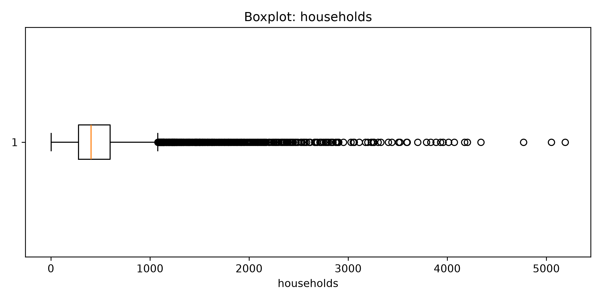
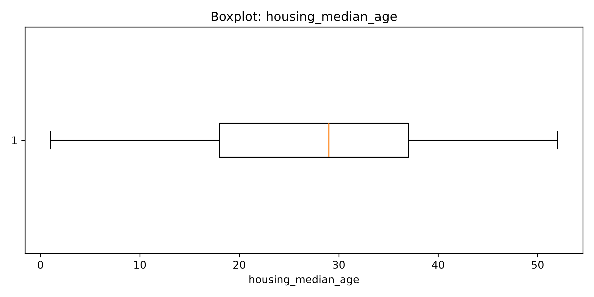
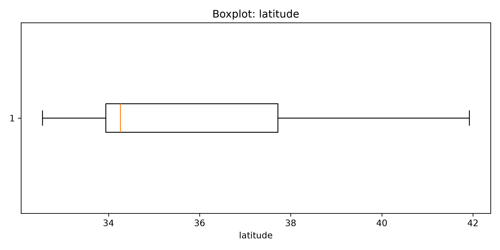
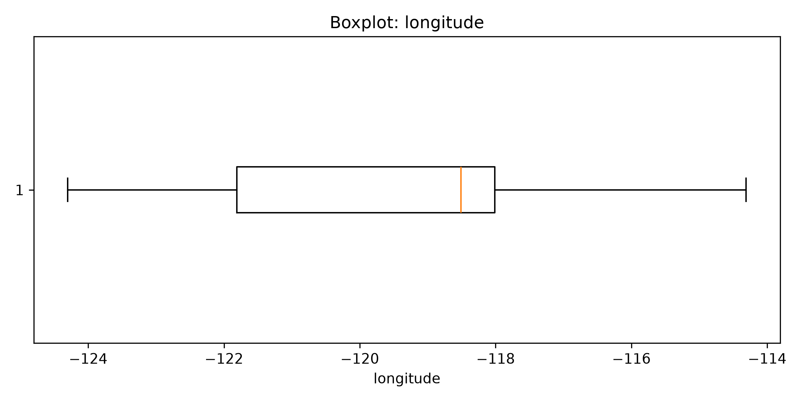
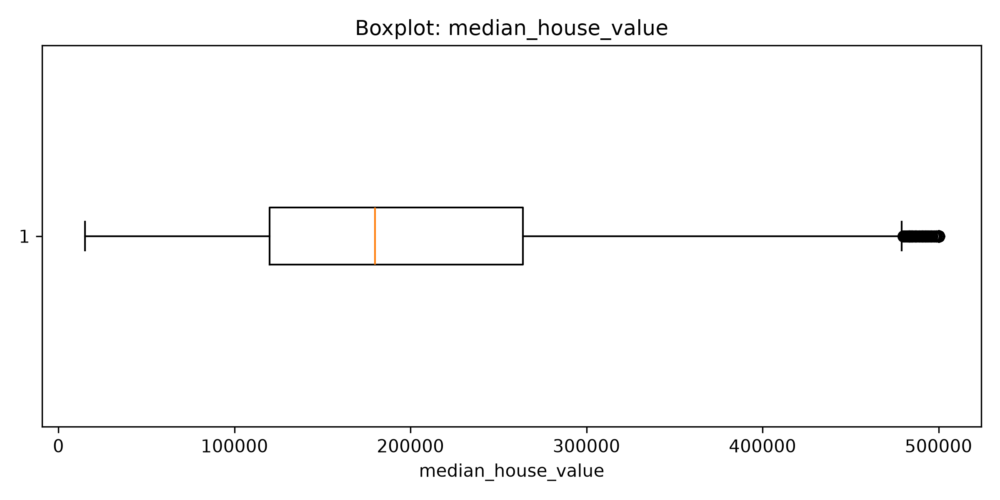
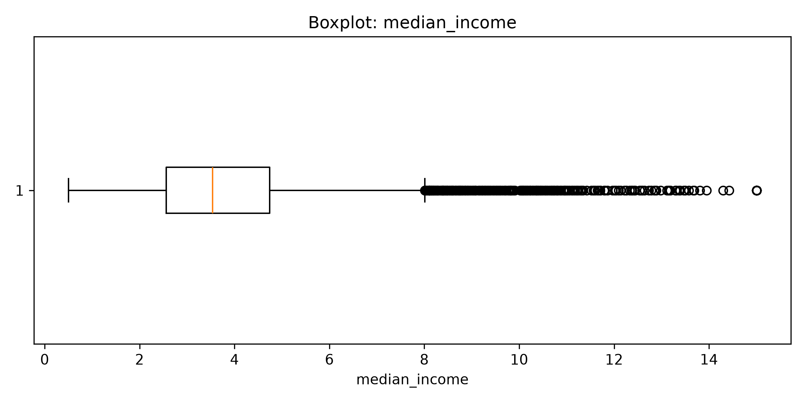
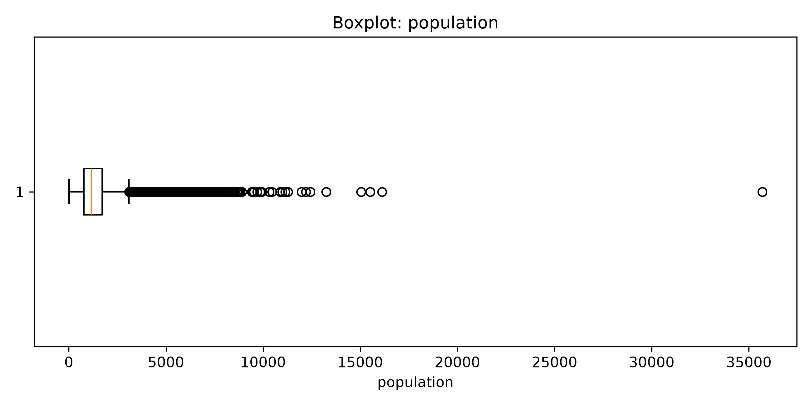
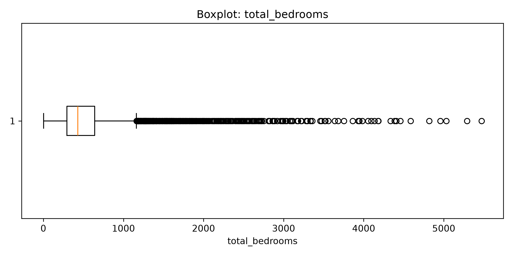
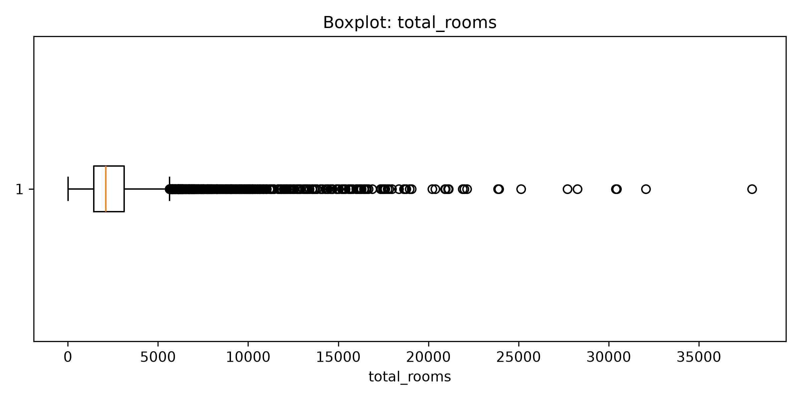
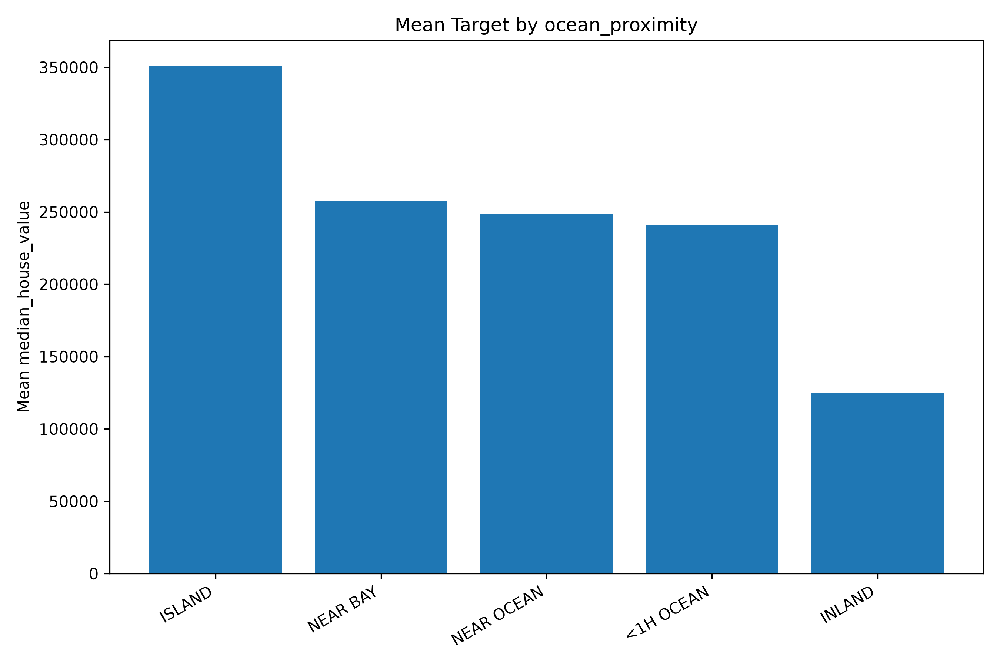
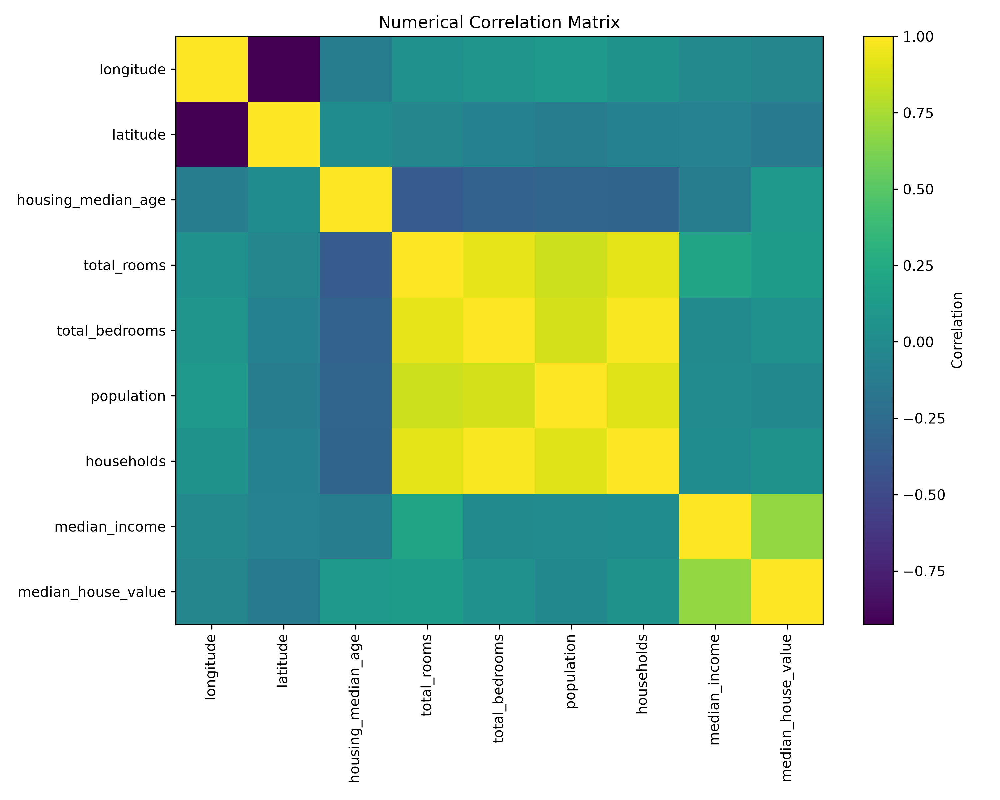
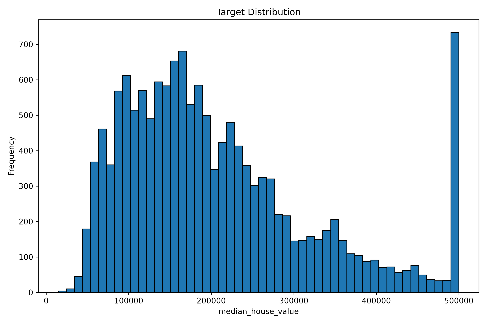
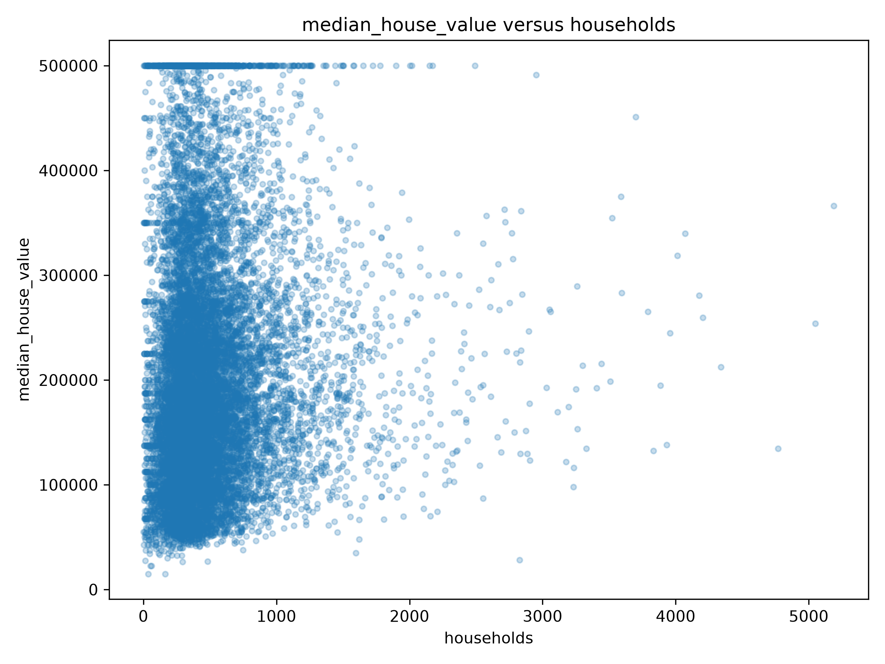
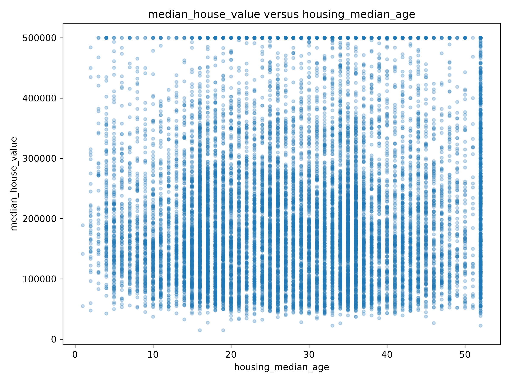
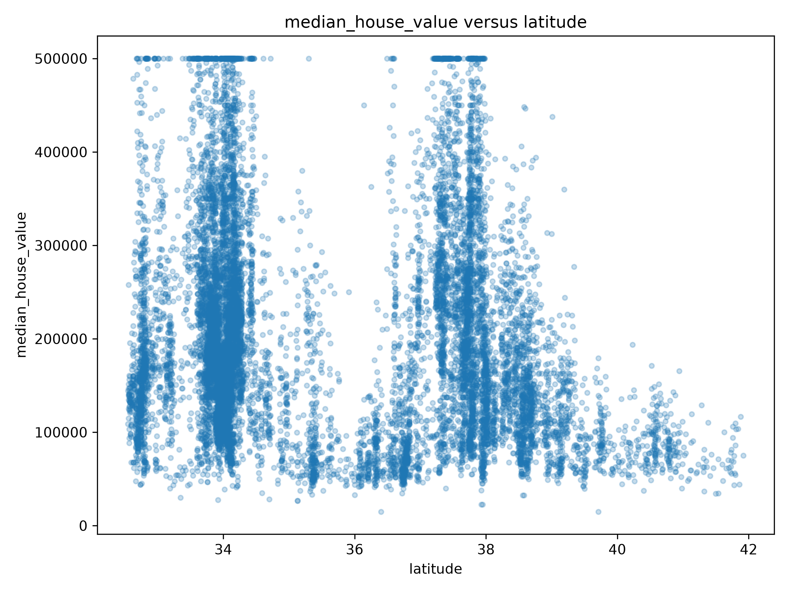
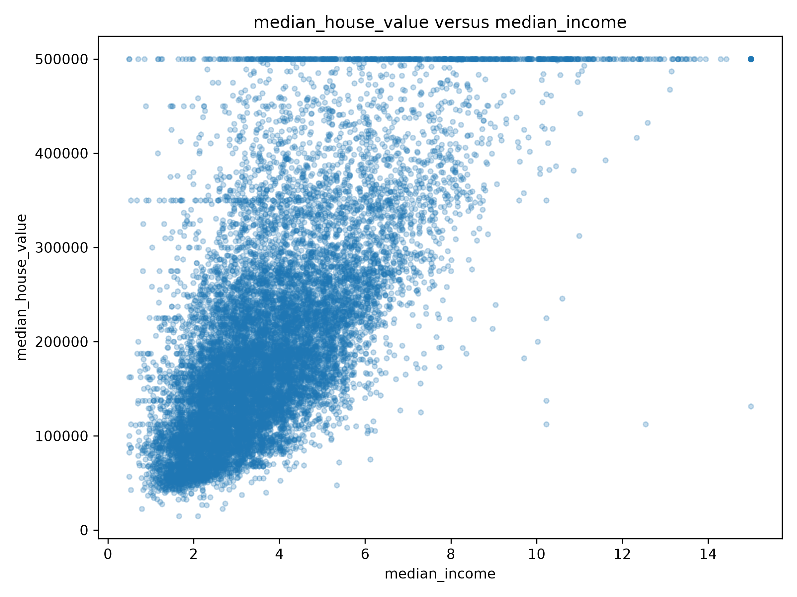
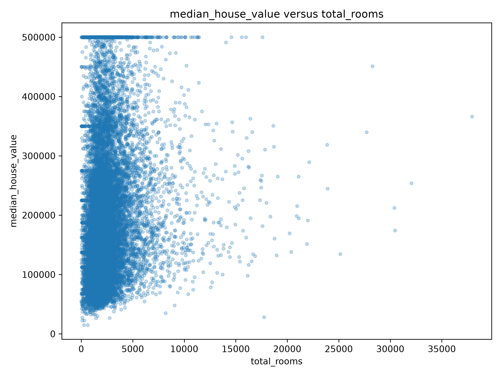